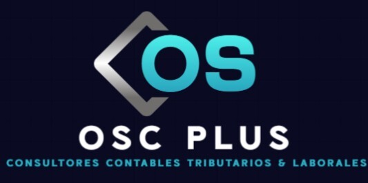

ContactoContadores con más de 25 años de experiencia que se ocupan de los números y las obligaciones de tu empresa.
Conviértete en clienteRegistro y análisis de la información financiera, estados financieros, balances y cumplimiento de las normas contables vigentes.
Contratos de trabajo, remuneraciones, imposiciones, finiquitos y cumplimiento de la normativa laboral y previsional.
Obligaciones ante el SII, declaraciones mensuales y anuales, planificación tributaria y apoyo en fiscalizaciones.
Potencia la imagen de tu empresa con el arriendo de una oficina virtual, pensada para emprendedores, pymes y profesionales que buscan formalidad, respaldo y presencia comercial sin los costos de una oficina física.
También +56 9 3036 4318 · Miguel Claro 195, of. 703, Providencia
contacto@oscplus.cl